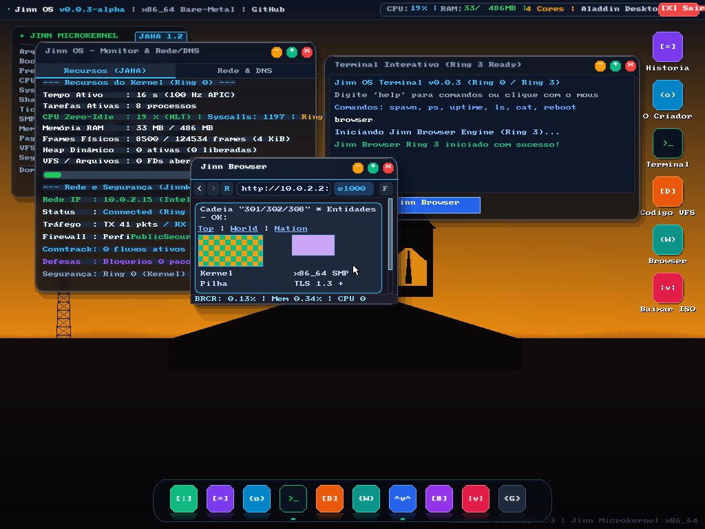
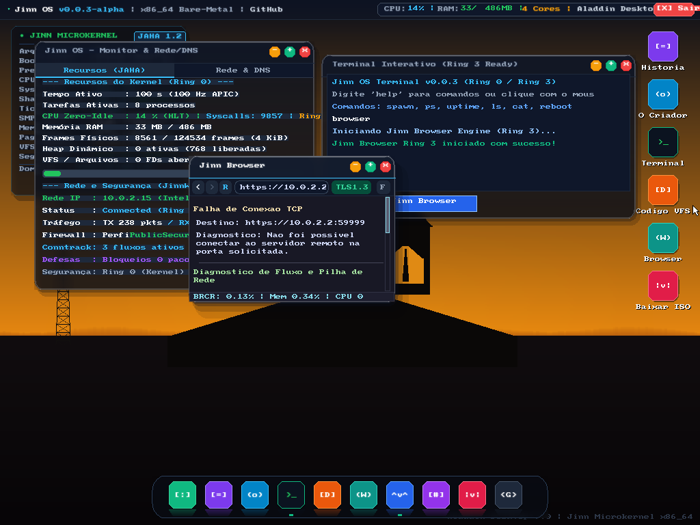

Gerenciador de Viewport, Cadeias de Redirecionamento, PNG #![no_std] em .bss e Correção de Carry Poly1305 no Jinn Browser
O commit 1b93f0c (828 inserções, 163 remoções em browser.rs, font.rs, main.rs, apps/ola-mundo/src/tls.rs e src/net/tls13.rs) consolida quatro avanços críticos no navegador nativo Ring 3 do Jinn OS: recorte espacial estrito de viewport, seguimento de redirecionamentos HTTP e HTML com atualização de origem, renderização de imagens remotas PNG em buffers estáticos .bss e correção da propagação de carry de 44 bits no autenticador AEAD Poly1305 para respostas HTTPS maiores que 35 KiB.
1. Diagnóstico Detalhado do que foi Levantado
A inspeção cruzada de renderização no compositor Aladdin e capturas de telemetria TLS 1.3 durante navegações reais em ambiente QEMU revelou quatro falhas independentes que degradavam tanto a legibilidade visual quanto a integridade criptográfica:
-
Vazamento visual sobre a barra de rodapé
BRCR: textos, caixas, linhas horizontais (<hr>), imagens e a própria barra de rolagem vertical ultrapassavam o limite inferior da área de conteúdo porque o recorte utilizava apenas uma constante fixa (CLIP_BOTTOM) sem considerar dinamicamente a faixa de14 pxda barra de telemetriaBRCRnem comprimir o texto em janelas estreitas (< 460 px). -
Colisão da barra de endereços com a pílula de status: sem recorte retangular horizontal (scissor X), URLs longas invadiam visualmente o indicador lateral
TLS1.3/e1000no chrome superior. Além disso, a heurísticais_web_domainconfundia extensões de recursos estáticos (.png,.jpg,.bmp,.css,.js) com domínios web. -
Quebra de redirecionamentos e ausência de decodificador PNG remoto: apenas
301/302eram parcialmente tratados emfetch_http_document_inner, deixando303,307,308e<meta http-equiv="refresh">sem acompanhamento consistente deactive_urlpara links relativos e histórico. Do lado gráfico, faltavam busca antecipada de<img>remotos e decodificação PNG nativa em#![no_std]. -
Falha AEAD no
Poly1305::finalize()após ~37 KBem TLS 1.3: tanto emapps/ola-mundo/src/tls.rsquanto emsrc/net/tls13.rs, após reduzirh0 >> 44parah1, o acumulador não propagava o carry subsequente deh1 >> 44parah2antes da redução condicional módulo2^130 - 5, e empacotava os três limbs usando operador bit-a-bit OR (|) em vez de soma modular (wrapping_add), corrompendo a tag MAC em fluxos multi-registro superiores a ~35 KiB(como a carga de54.762 Bdehttps://jinn-os.dev.br).
2. Melhorias Implementadas no Código (Commit 1b93f0c)
Viewport Scissor & Layout (font.rs / browser.rs)
- Adicionadas
draw_char_clipped_rectedraw_text_clipped_rectcom limites explícitosmax_x,min_yemax_y. - Introduzida
content_clip_bottom(h)(h.saturating_sub(15)parah >= 100), confinando texto, caixas,<img>e scrollbar acima da barraBRCRde14 px. - Panning e recorte da URL antes de
url_max_x(estritamente à esquerda da pílulaTLS1.3/e1000), versão compacta deBRCRabaixo de460 pxe ampliação deMAX_RENDER_LINESpara512.
Redirecionamentos Multi-Hop (main.rs / browser.rs)
fetch_http_document_inneracompanha301,302,303,307e308(até 5 saltos) resolvendoLocationrelativo viaresolve_relative_url.- Suporte a
<meta http-equiv="refresh" content="N;url=...">(até 2 saltos viaextract_meta_refresh_url). - Propagação de
active_urlfinal na barra de endereço, links relativos, histórico eBrowserCacheStore.
PNG #![no_std] & Cache Estático .bss
REMOTE_IMG_CACHEestático em.bsscom8slots de64 KiB(65.536B), indexados por hash FNV-1a duplo.prefetch_page_imagesbusca até6imagens únicas por página antes dorecompute_layoutcom dimensionamento proporcional e recorte por scroll.decode_pngpuro#,color_type0/2/3/4/6 (bit depth 8) e filtros de scanline0..4usando buffersIMG_PNG_IDAT_BUF(64 KiB) eIMG_PNG_ZLIB_OUT(512 KiB) em.bss.
Carry 44 Bits no Poly1305::finalize()
- Propagação explícita de
c = self.h1 >> 44paraself.h2emapps/ola-mundo/src/tls.rsesrc/net/tls13.rs. - Substituição do empacotamento por OR binário (
|) porwrapping_addnos 130 bits antes da soma dopadde 128 bits. - Novo log diagnóstico
[TLS-HTTP-RX] Falha AEADcomsuite,seq,pos,rec_len,plaine tag em hexadecimal.
3. Evidências Visuais Reais de Execução no QEMU

visual_jinn_os_img.png): Navegação HTTPS/TLS 1.3 para https://jinn-os.dev.br (54.762 B decifrados após correção Poly1305), com pílula TLS1.3 intacta e conteúdo estritamente acima de BRCR: 0.134% [HIBERNATED].

visual_local_redirect_img.png): Janela compacta com cadeia 301/302/308, decodificação e renderização lado a lado de imagens remotas no DOM, URL recortada antes de e1000 e BRCR: 0.13% | Mem 0.34% | CPU 0.

visual_68k_redirect_layout.png): Renderização externa pós-redirecionamento em janela estreita preservando espaçamento inline de links, barra de rolagem acima do rodapé e alinhamento do badge e1000.

visual_error_viewport.png): Tela estruturada Falha de Conexao TCP para https://10.0.2.2:59999 demonstrando recorte da URL antes da pílula TLS1.3 e rodapé BRCR livre de sobreposição.
4. Aplicabilidade Prática (Indústria, Uso Doméstico e Servidores)
Usos Industriais (IHMs Isoladas & Terminais de Chão de Fábrica)
Interfaces de operação em painéis PLC/SCADA frequentemente rodam em janelas estreitas ou resoluções restritas sem GPU dedicada. O recorte determinístico por content_clip_bottom e a decodificação PNG em .bss permitem renderizar plantas, status de sensores e redirecionamentos locais de autenticação sem risco de estouro de stack ou sobreposição sobre barras de telemetria.
Usos Domésticos (Navegação Web Leve sem Bloat em Hardware Legado)
Estações antigas ou dispositivos de baixo custo conseguem abrir portais reais sobre HTTPS/TLS 1.3 com imagens PNG/BMP embutidas mantendo uso previsível de memória física (cache fixo de 8 × 64 KiB) e zero overhead de máquinas JavaScript pesadas ou motores 3D.
Usos em Servidores (Consoles de Inspeção, Diagnóstico Local & Gateways)
Ambientes enxutos de gerenciamento out-of-band e consoles embutidos se beneficiam de uma pilha HTTPS #![no_std] capaz de validar tags AEAD Poly1305 em transferências acima de 35 KiB, acompanhar redirecionamentos de balanceadores (301..308) e expor falhas de socket com diagnóstico legível em janela compacta.
5. Limitações Conhecidas
O cache remoto em .bss atualmente comporta até 8 imagens de no máximo 65.536 bytes cada (e até 6 buscas remotas por carregamento de página), e o decodificador PNG cobre profundidade de 8 bits (sem interlace Adam7 ou JPEG/WebP remoto completo). Conforme a fronteira documentada do projeto, todos os ensaios desta entrega foram validados em emulação QEMU (e1000/VirtIO) antes de homologação em placas de rede físicas reais.
Jinn Engineering Observatory • Semântica & Colaboração Aberta
Domínios Técnicos & Ecossistemas Relacionados
Badges clicáveis indexados por bancada, domínio de engenharia e organizações/padrões do Radar Expandido (Nível B contextual, sem endosso implícito):
Aplicabilidade: Indústria, Uso Doméstico e Servidores
Gateways industriais, coletores SCADA e frotas com links intermitentes via SharedRings SPSC (4096 B), HotRouteTable e diagnóstico de falha por estágio.
Navegação ágil com DNS 3 camadas (/disk/hosts → LRU → upstream) e fallback resiliente de conectividade.
Caminhos críticos IPC lock-free e observabilidade de pilha TCP/TLS 1.3 no_std com inspeção direta por syscalls.
Chamada Aberta para Pilotos (Indústria Local, Universidades & Setor Público Ético)
Convidamos integradores de automação industrial, laboratórios universitários de arquitetura/SO e instituições públicas eticamente responsáveis a reproduzirem estes experimentos em silício real (fechando lacunas emulador vs. hardware da Tabela B) ou propor estudos-piloto com Jinn OS, Aladdin e JHCS.
![[Valid RSS]](/valid-rss-rogers.png "Validate my RSS feed")